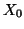
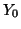
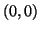

Next:
Initial_Z
Up:
Virtual AFM Box
Previous:
Initial position of the
Contents
Start{X,Y}
Sets initial coordinates

and

for the tip (with respect to the force field file). Zero values correspond to the first point

of the force field file.
Parameters
: ,
Default
: 0.0 0.0 (in m)
Example
:
Start{X,Y} 1.0d-10 -1.0d-10
Lev Kantorovich 2005-08-04